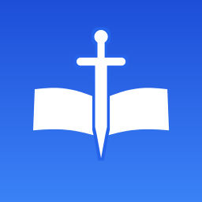

2025.11 ~ 진행 중 · 개인 프로젝트 · 1인 개발

사무엘학교 학습 웹서비스- 성경 암송 훈련 학습 웹서비스를 기획부터 React+TypeScript 프론트엔드, FastAPI+PostgreSQL 백엔드, OpenAI 기반 AI 채점까지 1인으로 개발해 제44기 실사용자 대상 운영
- 시험 목록 조회 API의 N+1 쿼리를 배치 조회로 제거하고 limit/offset 페이지네이션을 적용해 조회 성능 개선
- 예산 · 주간 생성 한도 가드레일을 적용해 14일간 AI 시험지 170개를 추정 비용 약 $0.24로 운영
449명전체 회원
190명14일 학습 회원
16,496회14일 학습 완료
36명최고 동시 접속
관리자 대시보드 기준 · 전체 회원 2026.08.23 / 운영 지표 08.10 ~ 08.23
ReactTypeScriptFastAPIPostgreSQLOpenAI API